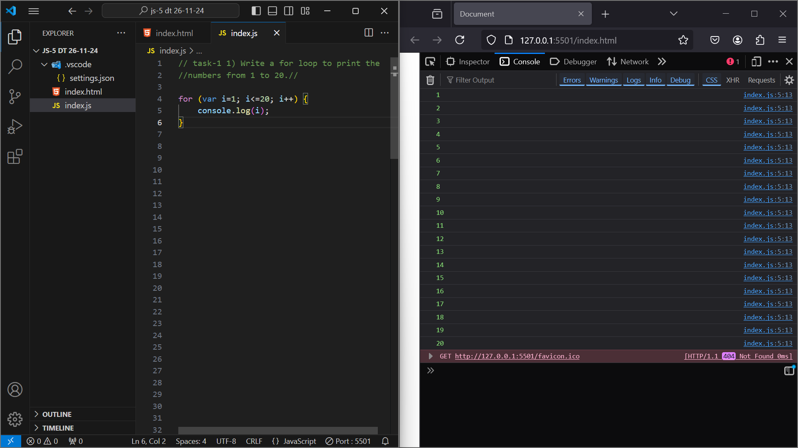
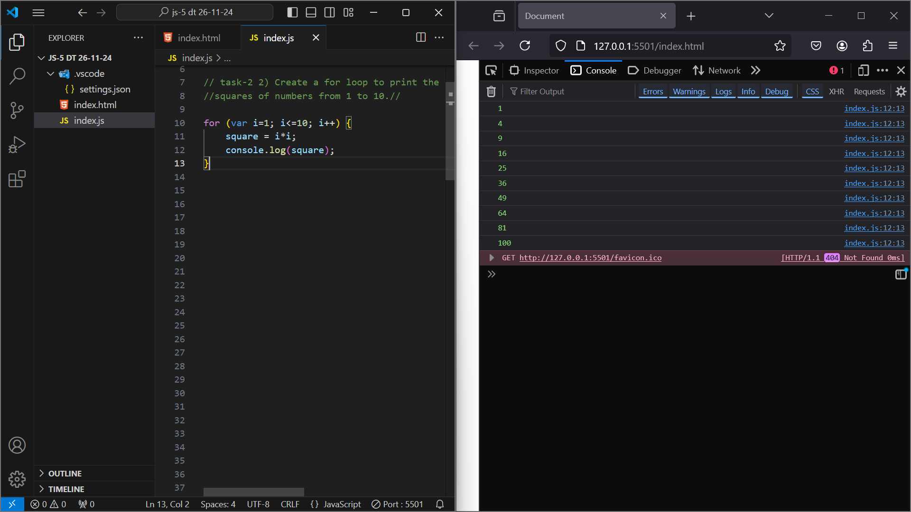
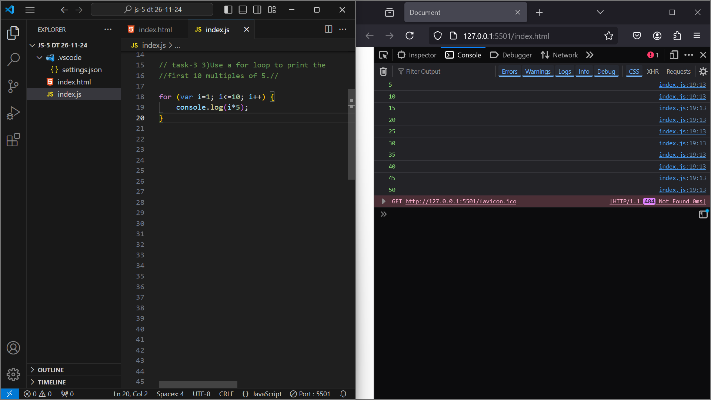
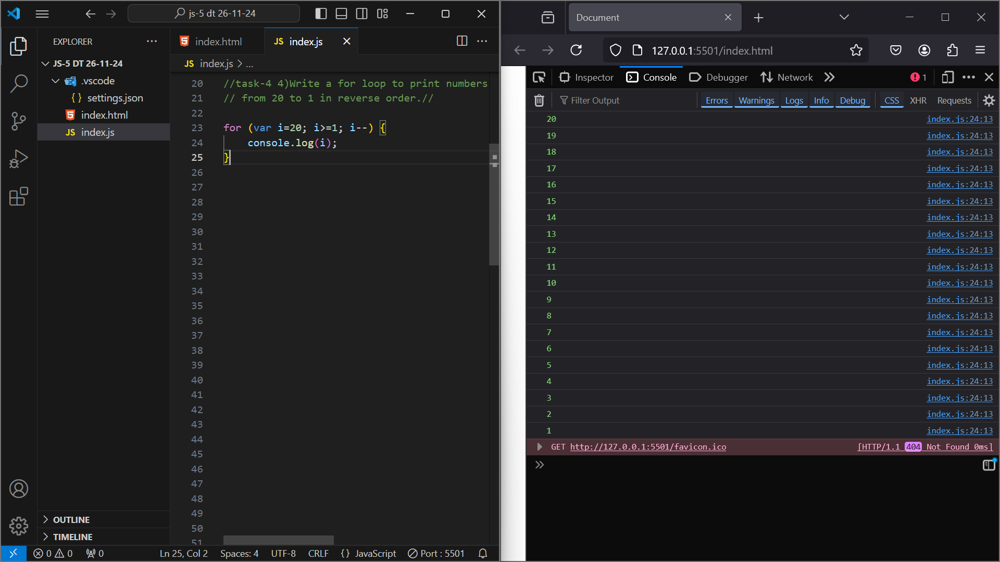
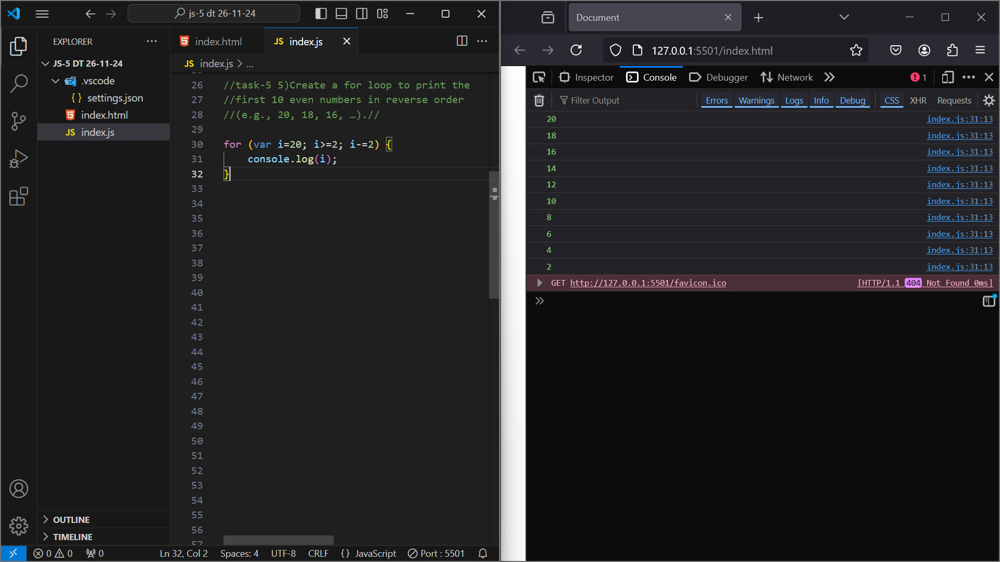
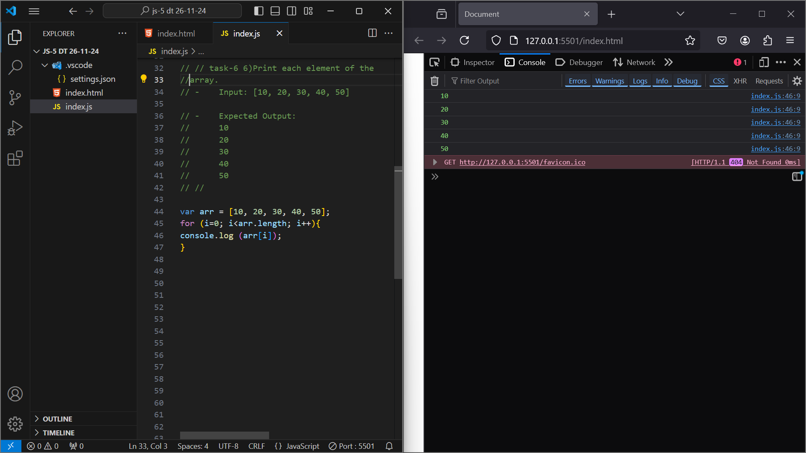
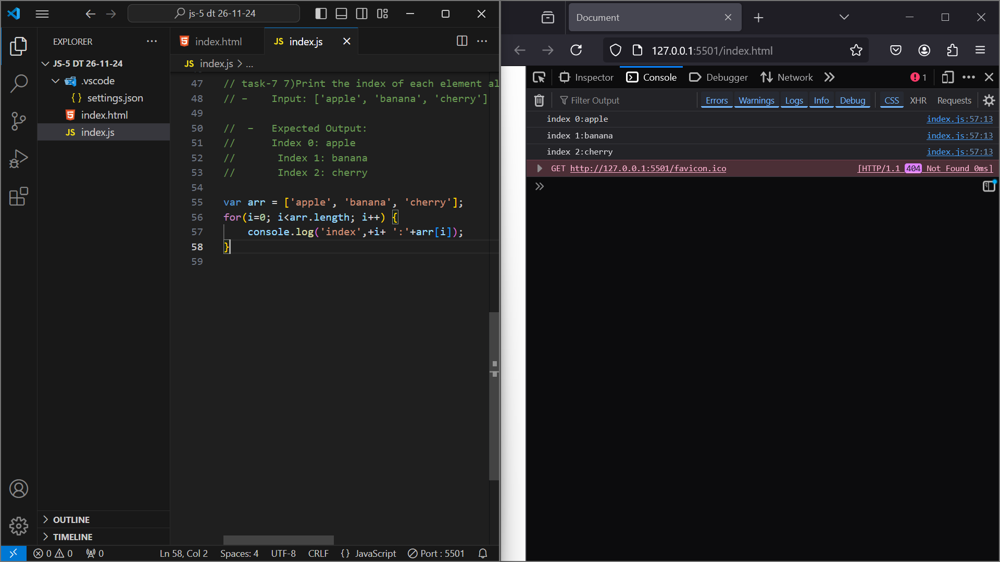

1.Write a for loop to print the numbers from 1 to 20.

2.Create a for loop to print the squares of numbers from 1 to 10.

3.Use a for loop to print the first 10 multiples of 5.

4.Write a for loop to print numbers from 20 to 1 in reverse order.

5.Create a for loop to print the first 10 even numbers in reverse order (e.g., 20, 18, 16, …).

6.Print each element of the array
– Input: [10, 20, 30, 40, 50]

7.Print the index of each element along with its value
– Input: ['apple', 'banana', 'cherry']
